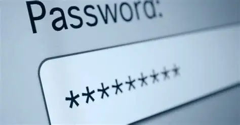

Ein sicheres Passwort ist wichtig, um persönliche Daten und Konten vor unbefugtem Zugriff zu schützen. Es sollte mindestens zwölf Zeichen lang sein und Groß- und Kleinbuchstaben, Zahlen sowie Sonderzeichen enthalten. Vermeide einfache Wörter, Geburtsdaten und Namen. Verwende außerdem für jedes Konto ein eigenes Passwort. Ein Passwortmanager hilft dir dabei, den Überblick zu behalten. So kannst du deine Daten besser schützen und das Risiko eines Hackerangriffs verringern.
Ein sicheres Passwort ist vorallem schwer zu erraten. Deshalb sollte am Besten 12 bis 16 Zeichen lang sein, und keine Persönlichen Daten wie den Geburtstag, Namen oder bekannte Nummern sein

Passwortdiebstahl auch genannt Pishing ist wenn jemand probiert auf deine Passwörter zuzugreifen. Typische Beispiele dafür sind:
Eine sogenannte Fake Mail ist eine Mail wo man zu einer gefälschten Website geleitet wird und sein Passwort angeben soll, dabei speichern Betrüger dein Passwort und können es divers einsetzen.
Diese sehen aus wie echte Anmeldeseiten, beispielsweise von Instagram. Wer dort seine Zugangsdaten eingibt , übermittelt sie an Betrüger.
Schadprogramme können Tastatureingaben und gespeicherte Passwörter ausspähen. Dadurch können Kriminelle Zugang zu Konten erhalten.
Bei einem Hackerangriff können gespeicherte Zugangsdaten eines Unternehmens gestohlen werden. Kriminelle versuchen dann, diese Passwörter für andere Konten zu verwenden.
Hacker versuchen, ein Passwort durch das systematische Ausprobieren vieler verschiedener Zeichen- und Zahlenkombinationen herauszufinden. Je kürzer und einfacher das Passwort ist, desto schneller kann es geknackt werden.
Passwortmanager speichern deine Passwörter sicher und erstellen starke, unterschiedliche Passwörter für deine Konten. Die (2FA) bietet zusätzlichen Schutz, indem man sich neben dem Passwort noch durch einen zweiten Faktor, beispielsweise einen SMS-Code oder eine Authentifizierungs-App, bestätigen muss.